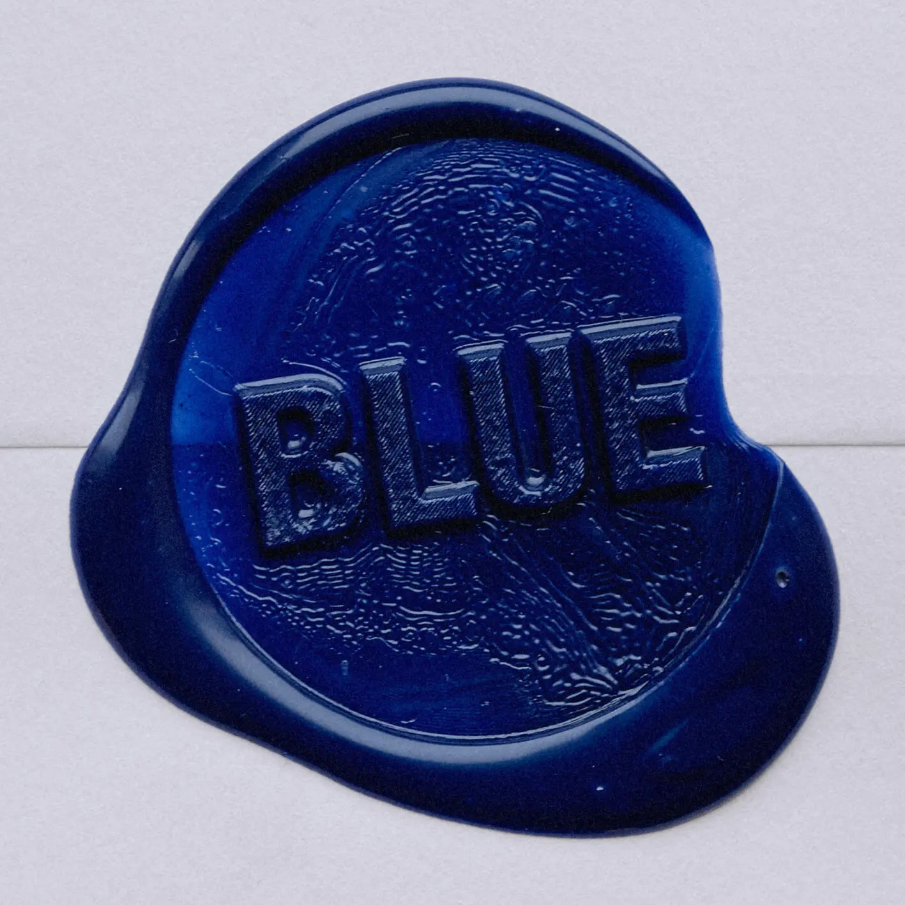

blue
One of my two song picks from blue.
Details
This selection pairs blue with clean slate, highlighting two songs from the same release.
Explore three albums and six of my favourite songs.



One of my two song picks from blue.
This selection pairs blue with clean slate, highlighting two songs from the same release.
My second song selection from blue.
Listen to clean slate after blue and compare the atmosphere of the two tracks.
My first pick from I'M DOING IT AGAIN BABY!
Start with DOING IT AGAIN BABY, then listen to Too Much to explore another track from this album.
My second pick from I'M DOING IT AGAIN BABY!
Pair Too Much with DOING IT AGAIN BABY and compare your impressions of the two songs.
My first selection from if i could make it go quiet.
Serotonin and Body And Mind are my two picks from this album. Listen to both to explore more of the release.
My second selection from if i could make it go quiet.
Body And Mind completes this six-song selection. Revisit the other five tracks and decide your own listening order.